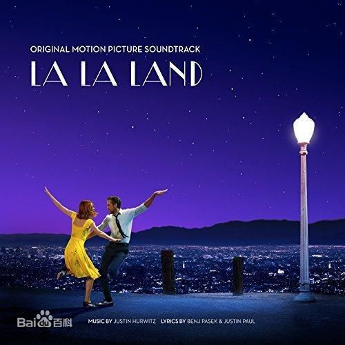

爱乐之城
故事发生在当代的洛杉矶，寂寥的小演员米娅的志向是女演员兼剧作家，她沉迷老电影明星。她在华纳兄弟的片场当咖啡师，经常翘班去试镜，如果真的接到戏，哪怕再小的角色也会让她欣喜若狂。塞巴斯蒂安是一名系丝绸领带的爵士钢琴师，对艺术有着近乎洁癖的追求。他想开间俱乐部，但他所痴迷的音乐更适合博物馆，几乎没有人会愿意花钱去听。为了生存，他违心加入了一支流行爵士乐队，在尖叫的观众面前摆弄音乐合成器。同样追求梦想的两人在这座城市里遇见彼此，在唱唱跳跳中坠入了爱河，相互慰藉扶持，一起追求毕生梦想。但在逐渐达成梦想的同时，艺术与商业、梦想与现实之间的朦胧博弈，另两人的情感也面临抉择和考验，在经历了一系列挫折、分歧后，他们彼此鼓励对方不要放弃梦想
该片虽然故事比较老套，但是在视听语言的呈现上，查泽雷导演使用了大量的装置艺术，用色块、几何形状以及光线的明暗区隔做出了明确的风格性特征。在歌曲选择上，也独具匠心，用音乐来讲故事。
影片并不完美，但是在风格展示和个性上却做到了令人无话可说。整部影片令人迷醉。
影片以一个极具野心的大堵车+长镜头开场，随后司机们纷纷下车开始欢快起舞，为影片奠定了整体基调。以“冬-春-夏-秋-冬”为界分成五个段落，虽然故事只是简单的“男孩遇见女孩，他们相爱了”常用套路，但在拥有超强控制力查泽雷的执导下，融合了爵士乐、摇摆舞，甚至是超现实的元素，都让歌舞片这个日渐没落的电影类型重新焕发了生机。其中男女主演的几段舞蹈都美好得不可方物，而导演对于影片的掌控能力，也着实令人惊叹。